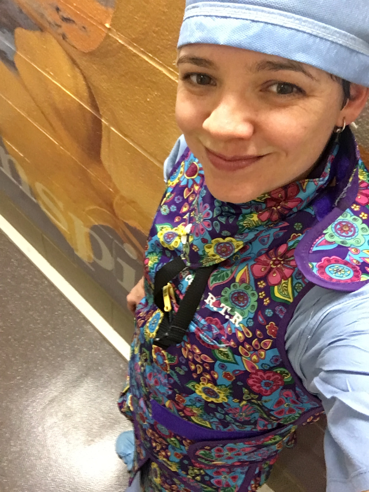
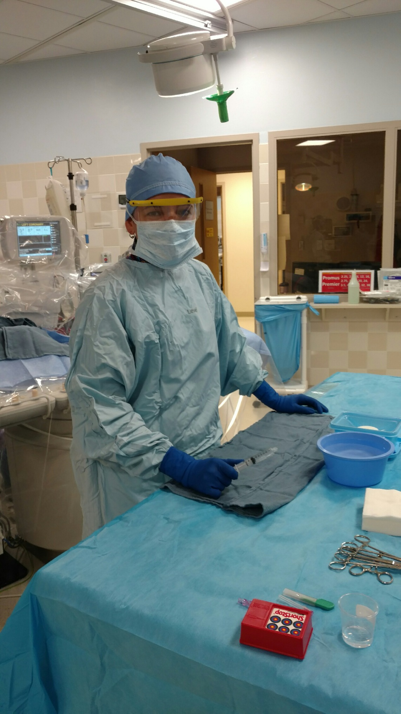
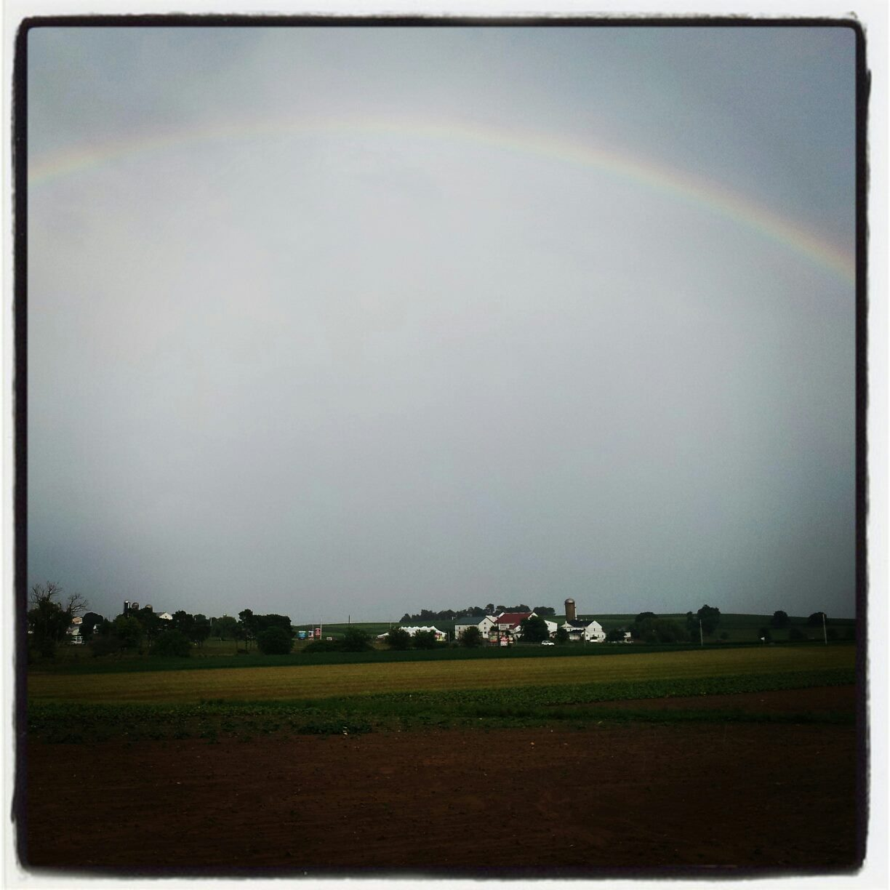
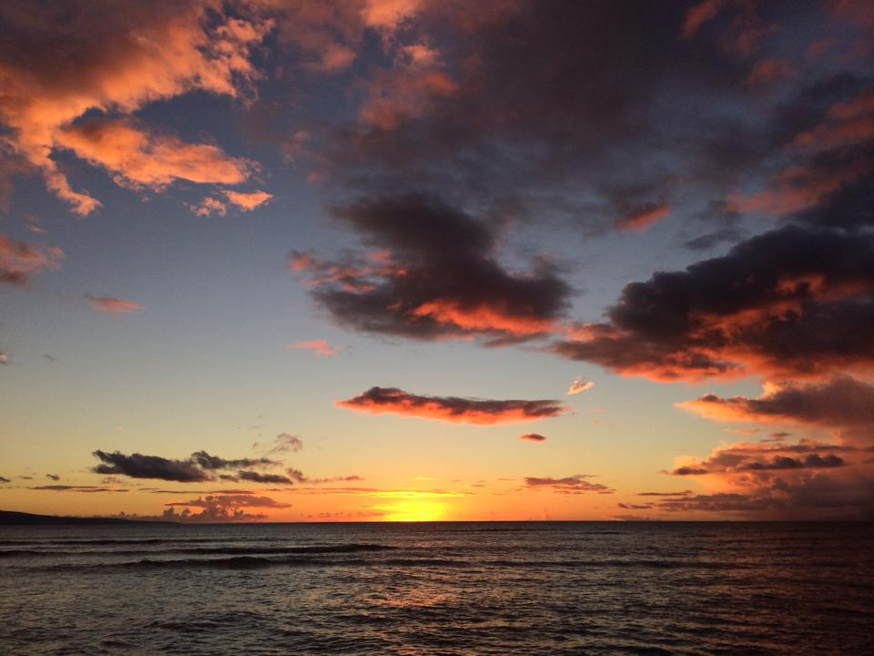
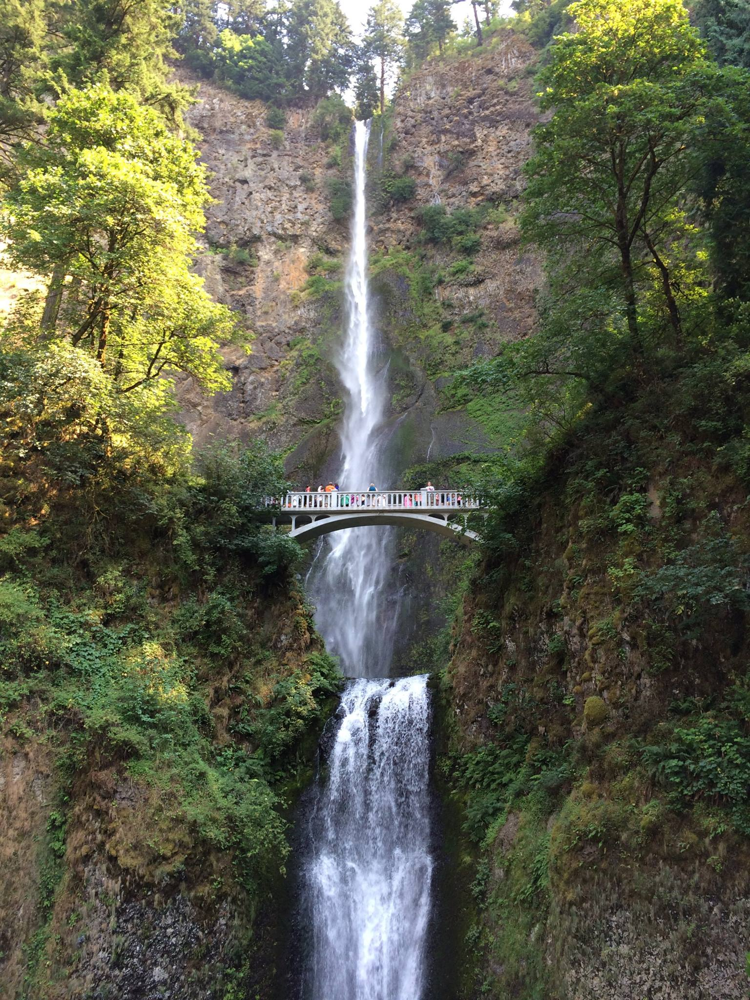
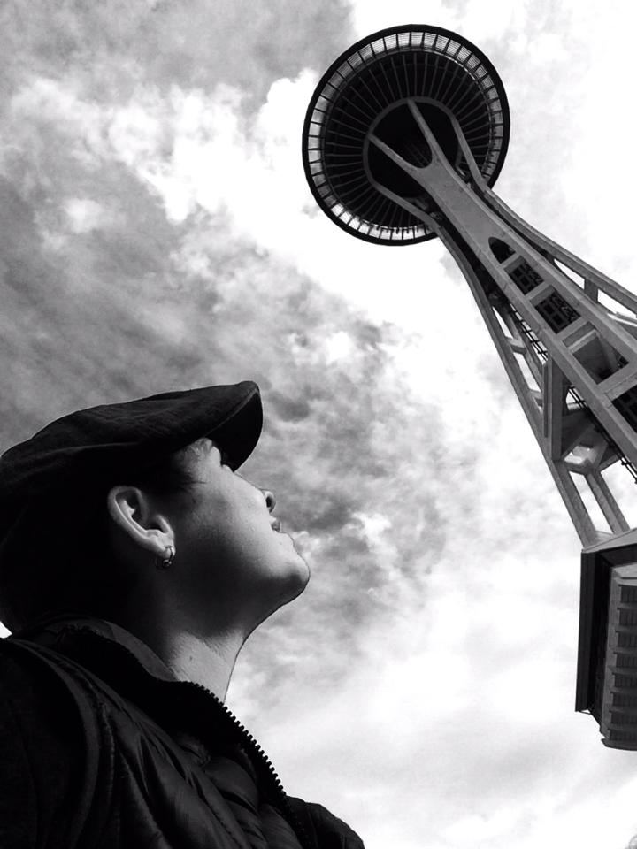
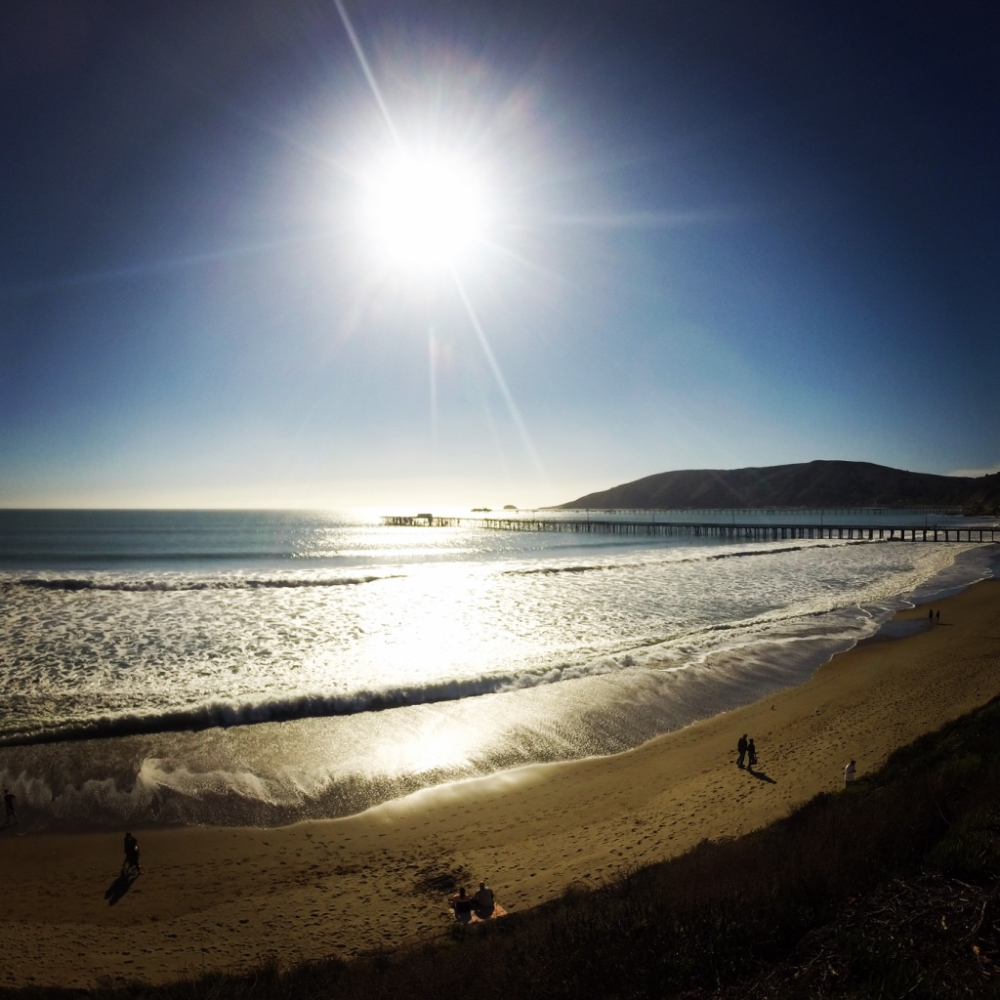
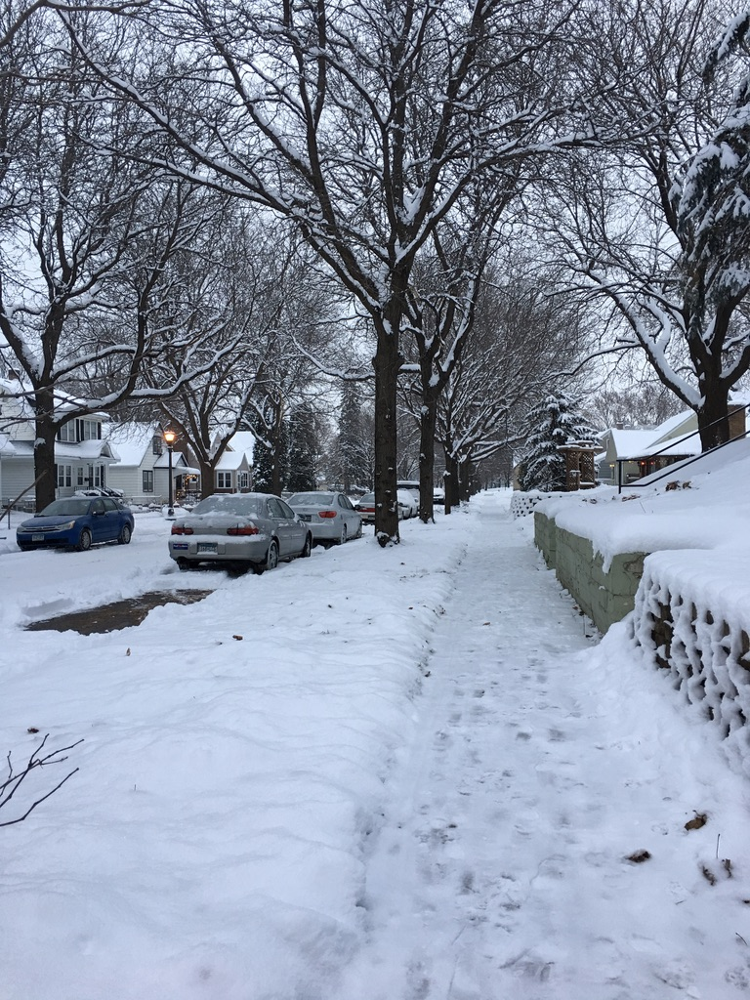
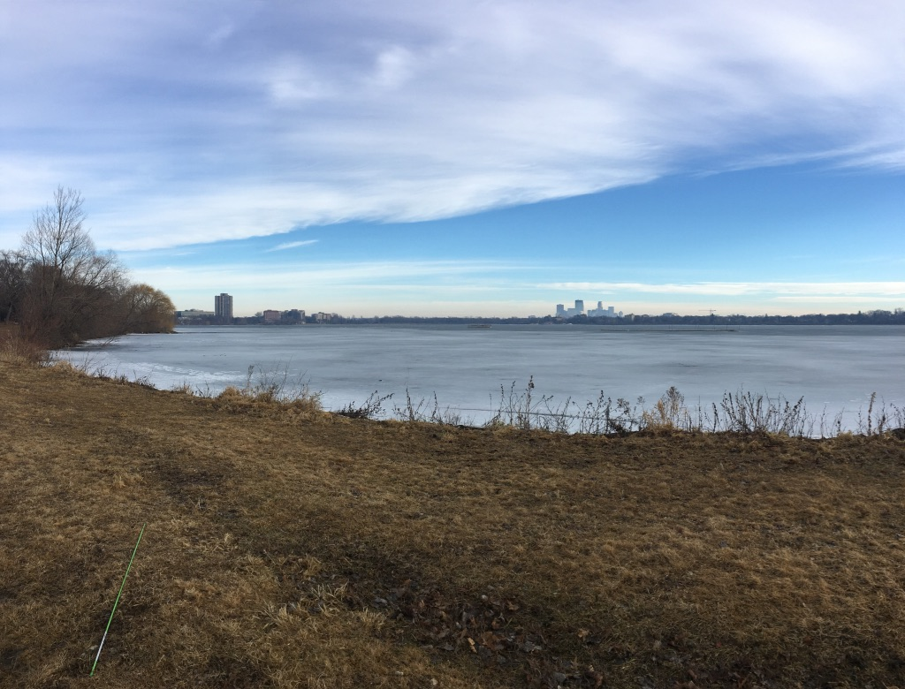

Shara Seaman

Permanent:
163 Private Road 8085
Buna, Tx 77612
Current:
886 Sherwood Ave
St. Paul, MN 55106
Contact:
512-949-9729
shara.seaman@gmail.com
Sharaseaman.com
Objective:
Embarking on the risky, intimidating, yet exciting adventure of changing careers.
I came across the world of code one year ago and have been preparing to transition
into this field since. I am leaving 10 years of healthcare experience to follow my passion.
Summary: who i am and what i do
Basics:
In 2008 I began my career as a Radiologic Technologist in Austin Tx.
My strong work ethic, quick learning, and positive attidude caught the attention of
the Cardiac Cath lab manager and I was offered a postiotion after only 6 months of
health care experience. Typically, two years experience is mandatory. Radiologic
programs provide very little training for a job in the Cardiac Cath/Interventional lab,
therefore, all of my education for this position was on-the-job.

Cardio Vascular/Interventional Technologist:
- ARRT
- ACLS, BLS
- gather all appropriate equipment
- maintain sterility throughout preparation
- scrub in, and assist the doctor
- managing the multi-million dollar x-ray equipment
- monitor vitals
This career is both rewarding and stressful. Oftentimes I am working in a life or
death situation. Everything is fast, so the expection to know your job well is high.
There is very little time to "think" about it; the procedure must be completed
efficiently and without the need to process each step. Throughout each procedure,
multi-tasking and functional collaboration between the team members are essential
elements for best possible outcome. Attention to detailis critical and could be the
difference between life and death.
Travel:
In 2013 I decided that it was time to push my comfort level and embarked on my riskiest decion yet.
My innate drive for learning and my extreme passion for travel and new experiences
lead me to pursue a career a "travel" tech.
Because the learning curve for the cardiac cath lab is so high,
it takes on average of 6mo-1year for on the job orientation to be complete.
This leads to a shortage in staffing. In addition, labs are requried to have an on-call team at all times.
In order to meet the staffing requirments, hospitals sometimes need to fill these positions with temporary
employees untill staffing needs can be meet. This is what I have done for the past 4 years.
I travel from hospital to hospital across the country to feel the staffing needs for cath labs in need.
My contracts are typically 3-6months.
"Travelers" are required to be well experienced and to be able to adapt to new environments and
to do that quickly. Hospitals need my help immedialtly and do not have time to train.
Each lab is completley different. All doctors have their own way of doing things and it is my job to
learn those differences, sometimes suttle differences, quickly. The basics are the same,
but every lab is different. I am constantly learning and adapting to my new environment so that I can
be helpful to the team in the way that they need.
Locations:
Hershey, Pennsylvania

Penn State University Hospital
548 bed hospital
My first assignment
Motto: "The Sweetest Place on Earth"
Contract: 6 months
Maui, Hawaii

Maui Memorial Medical Center
213 bed hospital
Contract: 6 months
Portland, Oregon

Providence Portland Medical Center
483 bed hospital
Motto: Keep Portland Weird
3 months
Seattle, Washington

University of Washington Hospital
450 bed hospital
Home of the 12th man
1 year
San Luis Obispo, California

Dignity Hospital
Motto:
3 months
Boston, Massachusetts
Brigham and Women's Hospital: Yale
793 bed hospital
3 months
St. Paul, Minnesota

United Hospital
370 bed hospital
My first real winter
4 Months
Minneapollis, Minnesota

Abbott Northwestern Hospital
675 bed hospital
4 Months
Education:
School
Austin Community College
Associates of Applied Science, Radiology
August, 2008
License
ARRT, American Registry of Radiologic Technologitst
ACLS, Advanced Cardiac Life Support
BLS, Basic Life Support
Employeers:
American Mobile: Club Staffing
Aug 2013- Aug 2013
Aureus Medical Group
Aug 2013 -3101
Cross Country Staffing
Aug 3223-3323
Seton Family of Hospitals
Aug232 - 3232
St Davids Hospital
Aug 2323 - 2323